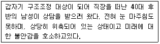
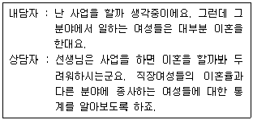
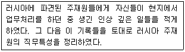
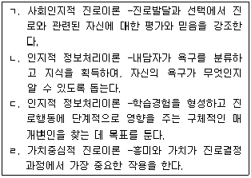
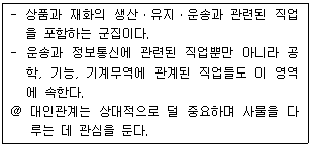
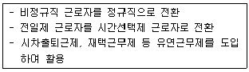
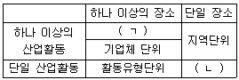
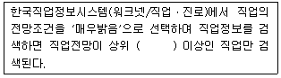

직업상담사-2급 (2017-05-18 기출문제)
1과목: 직업상담학
1. 상담의 목표설정 과정에 관한 설명으로 틀린 것은?
- 전반적인 목표는 내담자의 욕구들에 의해 결정된다.
- 현존하는 문제를 평가하고 나서 목표설정 과정으로 들어간다.
- 상담자는 목표설정에 개입하지 않는다.
- 내담자의 목표를 끌어내기 위한 기법에는 면접안내가 있다.
(정답률: 80%)

2. 다음 내담자를 상담할 경우 가장 먼저 해야 할 것은?

- 관계 형성
- 상담자의 전문성 소개
- 상담 구조 설명
- 상담목표 설정
(정답률: 88%)
3. 진로수첩이 내담자에게 미치는 유용성이 아닌 것은?
- 자기 평가를 통해 자신감과 자기 인식을 증진시킨다.
- 일 관련 태도 및 흥미에 대한 지식을 증진시킨다.
- 다양한 경험들이 어떻게 직무관련 태도나 기술로 전환될 수 있는지에 대해 이해를 발전 시킨다.
- 진로, 교육, 훈련 계획을 개발하기 위한 상담도구를 제공한다.
(정답률: 61%)
4. 6개의 생각하는 모자(Six Thinking Hats) 기법은 무엇을 위한 것인가?
- 직업정보의 수집
- 시간관념의 개선
- 보유기술의 파악
- 의사결정의 촉진
(정답률: 82%)
5. 직업상담의 과정을 진단, 문제분류, 문제구체화, 문제해결의 단계로 구분한 학자는?
- Crites
- Krumboltz
- Super
- Gysbers
(정답률: 74%)
6. 진로개발프로그램을 운영하는 방법의 하나인 집단진로상담에 관한 설명으로 옳은 것은?
- 참여하고자 하는 학생들 중 사전조사를 통해서 책임의식이 있는 학생들로 선발한다.
- 참여하는 학생들은 목표와 기대가 동일하기 때문에 개인차를 고려하지 않는다.
- 프로그램 단계별로 나타나는 집단의 역동성은 문제를 복잡하게 만들기 때문에 무시하는 것이 좋다.
- 다양한 정보습득과 경험을 해야 하기 때문에 참여 학생들은 진로발달상 이질적일수록 좋다.
(정답률: 78%)
7. 내담자중심 상담에서 상담자가 심리검사를 사용할 때의 활동원칙이 아닌 것은?
- 검사결과의 해석에 내담자가 참여하도록 한다.
- 검사결과를 명확하게 전달하기 위해 평가적인 언어를 사용한다.
- 내담자가 알고자 하는 정보와 관련된 검사의 가치와 제한점을 설명한다.
- 검사결과를 입증하기 위한 더 많은 자료가 수집될 때까지는 시험적인 태도로 조심스럽게 제시되어야 한다.
(정답률: 78%)
8. 효율적인 직업정보의 특징과 가장 거리가 먼 것은?
- 정보의 정확성
- 성별이나 종교 등에 편파적이지 않은 정보
- 대상 연령에 구분 없는 보편적 용어의 사용
- 분명하고 구체적이며 흥미를 높이는 정보
(정답률: 68%)
9. 행동주의 상담기법에 해당되지 않는 것은?
- 조형법
- 역전기법
- 혐오치료법
- 긍정적 강화법
(정답률: 48%)
10. 생애진로사정의 구조에 포함되지 않는 것은?
- 진로사정
- 강점과 장애
- 훈련 및 평가
- 전형적인 하루
(정답률: 77%)
11. 특성-요인 상담의 목표가 아닌 것은?
- 내담자가 잠재적인 모든 개성을 발달시키는 데 주력한다.
- 내담자가 자기 자신의 가능성을 확인하고 그 가능성을 활용할 수 있게 한다.
- 내담자가 자신이 필요로 하는 정보를 수집, 분석, 종합할 수 있도록 한다.
- 내담자가 자신의 문제를 해결하도록 한다.
(정답률: 53%)
12. 내담자의 정보 및 행동을 이해하기 위해 사용하는 변형된 오류 수정하기와 은유 사용하기는 무엇을 위한 기법인가?
- 왜곡된 사고 확인하기
- 분류 및 재구성하기
- 전이된 오류 정정하기
- 저항감 다루기
(정답률: 38%)
13. 내담자중심 상담의 상담목표가 아닌 것은?
- 내담자의 내적 기준에 대한 신뢰를 증가시키도록 도와주는 것
- 경험에 보다 개방적이 되도록 도와주는 것
- 지속적인 성장 경향성을 촉진시켜 주는 것
- 내담자의 자유로운 선택과 책임의식을 증가시켜 주는 것
(정답률: 39%)
14. Jung이 제안한 4단계 치료 과정을 순서대로 올바르게 나열한 것은?
- 고백단계 –교육단계 –명료화단계 - 변형단계
- 고백단계 –명료화단계 –교육단계 - 변형단계
- 고백단계 –변형단계 –명료화단계 - 교육단계
- 고백단계 –교육단계 –변형단계 –명료화단계
(정답률: 69%)
15. 역할사정에서 상호역할관계를 사정하는 방법이 아닌 것은?
- 질문을 통해 사정하기
- 동그라미로 역할관계 그리기
- 역할의 위계적 구조 작성하기
- 생애-계획연습으로 전환시키기
(정답률: 68%)
16. 다음 면담에서 인지적 명확성이 부족한 내담자의 유형과 상담자의 개입방법이 바르게 짝지어진 것은?

- 구체성의 결여 - 구체화시키기
- 파행적 의사소통 –저항에 다시 초점 맞추기
- 강박적 사고 –RET 기법
- 원인과 결과 착오 –논리적 분석
(정답률: 75%)
17. 형태주의 상담에서 Perls가 제안한 신경증의 층 중 개인이 자신의 고유한 모습으로 살아가지 않고 부모나 주위환경의 기대역할에 따라 행동하며 살아가는 단계는?
- 피상층
- 곤경층
- 공포층
- 내파층
(정답률: 58%)
18. 상담시 상담사의 질문으로 바람직하지 않은 것은?
- “당신이 선호하는 직업이 있다면 무엇인가요? 그런 이유를 말씀해 주시겠어요?”
- “당신이 특별히 좋아하는 것이 있다면 말씀해 주시겠어요?”
- “직업상담을 해야겠다고 결정했나요?”
- “어떻게 생각해야 할지 이해가 잘 가지 않는군요. 잘 모르겠어요. 제가 좀 더 확실하게 이해할 수 있도록 도와주시겠어요?”
(정답률: 66%)
19. 교류분석 상담의 상담 과정에서 내담자 자신의 부모자아, 성인자아, 어린이자아의 내용이나 기능을 이해하는 방법은?
- 구조분석
- 의사교류분석
- 게임분석
- 생활각본분석
(정답률: 54%)
20. 상담사의 윤리적 태도와 행동으로 옳은 것은?
- 내담자와 상담관계 외에도 사적으로 친밀한 관계를 형성한다.
- 과거 상담사와 성적 관계가 있었던 내담자라도 상담관계를 맺을 수 있다.
- 내담자의 사생활과 비밀보호를 위해 상담 종결 즉시 상담기록을 폐기한다.
- 비밀보호의 예외 및 한계에 관한 갈등상황에서는 동료 전문가의 자문을 구한다.
(정답률: 82%)
2과목: 직업심리학
21. A 유형의 행동 특징에 관한 설명으로 틀린 것은?(문제 복원 오류로 정답은 3번입니다.)
- 근무 시간을 철저하게 지키고, 항상 긴박감을 느낀다.
- 평소 활동이 공격적이고 적대적이며 참을성이 없다.
- 시간에 대한 걱정이 덜 하고 여유를 가진다.
- 사내의 활동이 경쟁적이며 승부에 집착한다.
(정답률: 80%)
22. 다음 사례에 해당하는 직무분석 방법은?

- 결정적 사건법
- 작업일지법
- 작업자 중심법
- 관찰법
(정답률: 72%)
23. Holland의 성격유형 중 구조화된 환경을 선호하고, 질서정연하고 체계적인 자료정리를 좋아하는 것은?
- 실제형
- 탐구형
- 사회형
- 관습형
(정답률: 77%)
24. Strong 검사에 대한 설명으로 옳은 것은?
- 기본흥미척도(BIS)는 Holland의 6가지 유형을 제공한다.
- Strong 진로탐색검사는 진로성숙도 검사와 직업흥미검사로 구성되어 있다.
- 업무, 학습, 리더십, 모험심을 알아보는 기본흥미척도(BIS)가 포함되어 있다.
- 개인특성척도(BSS)는 일반직업분류(GOT)의 하위척도로서 특정 흥미분야를 파악하는 데 도움이 된다.
(정답률: 53%)
25. 심리검사에 관한 설명으로 틀린 것은?
- 대부분의 심리검사는 준거참조검사이다.
- 측정의 오차가 작을수록 신뢰도는 높은 경향이 있다.
- 검사의 신뢰도가 높으면 타당도도 높게 나타나지만 항상 그런 것은 아니다.
- 검사가 측정하고자 하는 심리적 구인(구성개념)을 정확하게 측정하는 것은 타당도의 개념이다.
(정답률: 57%)
26. 자기효능감에 영향을 미치는 요인과 가장 거리가 먼 것은?
- 대리경험
- 설 득
- 성취경험
- 사회경제적 여건
(정답률: 45%)
27. 직업상담에 사용되는 질적 측정도구가 아닌 것은?
- 역할놀이
- 제노그램
- 카드분류
- 욕구 및 근로 가치 척도
(정답률: 67%)
28. 직업발달에 관한 특성-요인이론의 종합적인 결과를 토대로 Klein와 Weiner 등이 내린 결론과 가장 거리가 먼 것은?
- 인간은 신뢰롭고 타당하게 측정할 수 있는 독특한 특성을 지니고 있다.
- 모든 직업마다 성공에 필요한 독특한 특성을 가지고 있다.
- 개인의 직업선호는 부모의 양육환경 특성에 의해 좌우된다.
- 개인의 특성과 직업의 요구사항 간에 상관이 높을수록 직업적 성공의 가능성이 커진다.
(정답률: 71%)
29. 진로이론에 관한 설명으로 옳은 것은?

- ㄱ, ㄴ
- ㄱ, ㄷ
- ㄴ, ㄹ
- ㄷ, ㄹ
(정답률: 44%)
30. 표준화된 심리검사에서 표준점수에 관한 설명으로 옳은 것은?
- 특정한 원점수 이하에 속하는 사례의 비율을 통해 나타내는 상대적 위치이다.
- 개인의 점수가 평균으로부터 떨어져 있는 거리이다.
- 순차적이고 단계적인 발달의 과정이다.
- 모집단을 대표할 수 있도록 표집한 규준집단에서의 자료이다.
(정답률: 48%)
31. 작업자 중심 직무분석에 관한 설명으로 틀린 것은?
- 직무를 수행하는 데 요구되는 인간의 재능들에 초점을 두어서 지식, 기술, 능력, 경험과 같은 작업자의 개인적 요건들에 의해 직무가 표현된다.
- 직책분석설문지(PAQ)를 통해 직무분석을 실시할 수 있다.
- 각 직무에서 이루어지는 과제나 활동들이 서로 다르기 때문에 분석하고자 하는 직무 각각에 대해 표준화된 분석도구를 만들 수 없다.
- 직무분석으로부터 얻어진 결과는 작업자명세서를 작성할 때 중요한 정보를 제공한다.
(정답률: 69%)
32. 다음은 Roe가 제안한 8가지 직업 군집 중 어디에 해당하는가?

- 기술직(Technology)
- 서비스직(Service)
- 비즈니스직(Business Contact)
- 옥외활동직(Outdoor)
(정답률: 77%)
33. 개인의 변화를 목표로 하는 이차적 스트레스 관리전략에 해당하지 않는 것은?
- 이완훈련
- 바이오피드백
- 직무재설계
- 스트레스관리훈련
(정답률: 66%)
34. 다음 중 채점자 간 신뢰도가 가장 높게 나타나는 유형은?
- 에세이 검사
- 사지선다형 검사
- 투사법
- 직접 행동 관찰법
(정답률: 68%)
35. 직업선택 과정에 관한 설명으로 옳은 것은?
- 직업에 대해 정확한 정보만 가지고 있으면 직업을 효과적으로 선택할 수 있다.
- 주로 성년기에 이루어지기 때문에 어릴 때 경험은 영향력이 없다.
- 개인적인 문제이기 때문에 가족이나 환경의 영향은 관련이 없다.
- 일생동안 계속 이루어지는 과정이기 때문에 다양한 시기에서 도움이 필요하다.
(정답률: 77%)
36. K-WAIS의 동작성 검사에 해당되지 않는 것은?
- 바꿔쓰기
- 토막짜기
- 공통성 찾기
- 빠진 곳 찾기
(정답률: 58%)
37. 미네소타 직업분류체계 Ⅲ와 관련하여 발전한 직업발달이론은?
- Krumboltz의 사회학습이론
- Super의 평생발달이론
- Ginzberg의 발달이론
- Lofquist와 Dawis의 직업적응이론
(정답률: 71%)
38. Selye가 제시한 스트레스의 단계에 해당하지 않는 것은?
- 경계단계(Alarm Stage)
- 저항단계(Resistance Stage)
- 재발단계(Recurrence Stage)
- 탈진단계(Exhaustion Stage)
(정답률: 76%)
39. 경력개발을 위한 교육훈련을 실시할 때 가장 먼저 고려해야 하는 사항은?
- 사용 가능한 훈련방법에는 어떤 것들이 있는지에 대한 고찰
- 현 시점에서 어떤 훈련이 필요한지에 대한 요구분석
- 훈련프로그램의 효과를 평가하고 개선할 수 있는 방안을 계획하고 수립
- 훈련방법에 따른 구체적인 프로그램 개발
(정답률: 73%)
40. Super의 이론이나 그의 생애진로 무지개 개념에 관한 설명으로 틀린 것은?
- 사람은 동시에 여러 가지 역할을 함께 수행하며 발달단계마다 다른 역할에 비해 중요한 역할이 있다.
- 인생에서 진로발달 과정은 전 생애에 걸쳐 계속되며 성장, 탐색, 정착, 유지, 쇠퇴 등의 대주기(Maxi Cycle)를 거친다.
- 진로발달에는 대주기 외에 각 단계마다 같은 성장, 탐색, 정착, 유지, 쇠퇴로 구성된 소주기(Mini Cycle)가 있다.
- Super의 이론은 생애진로발달 과정에서 1회적인 선택 과정에 대해 구체적으로 잘 설명한다.
(정답률: 64%)
3과목: 직업정보론
41. 직업정보 제공에 관한 설명으로 옳은 것은?
- 모든 내담자에게 직업정보를 우선적으로 제공한다.
- 직업상담사는 다양한 직업정보를 제공하기 위해 지속적으로 노력한다.
- 진로정보 제공은 직업상담의 초기단계에서 이루어지며, 이 경우 내담자의 피드백은 고려하지 않는다.
- 내담자가 속한 가족, 문화보다는 표준화된 정보를 우선적으로 고려하여 정보를 제공한다.
(정답률: 72%)
42. 워크넷의 청소년 대상 심리검사의 종류 중 지필방법으로 실시할 수 없는 것은?(관련 규정 개정전 문제로 여기서는 기존 정답인 2번을 누르면 정답 처리됩니다. 자세한 내용은 해설을 참고하세요.)
- 청소년 직업흥미검사
- 고교계열 흥미검사
- 고등학생 적성검사
- 청소년 진로발달검사
(정답률: 64%)
43. 직업정보 수집을 위해 질문지를 마련할 때 문항 작성 및 배열의 원칙과 가장 거리가 먼 것은?
- 개인 사생활에 관한 질문과 같이 민감한 질문은 가급적 뒤로 배치하는 것이 좋다.
- 질문 내용은 가급적 구체적인 용어로 표현하는 것이 좋다.
- 특수한 것을 먼저 묻고 그 다음에 일반적인 것을 질문하도록 하는 것이 좋다.
- 질문은 논리적인 순서에 따라 자연스럽게 배치하는 것이 좋다.
(정답률: 77%)
44. 한국직업전망(2017)의 수록직업 선정에 관한 설명으로 틀린 것은?(오류 신고가 접수된 문제입니다. 반드시 정답과 해설을 확인하시기 바랍니다.)
- 수록직업은 한국표준직업분류의 중분류 직업에 기초하여 종사자 수가 일정 규모 이상인 경우를 원칙으로 선정하였다.
- 청소년 및 구직자의 관심이 높거나 직업정보를 제공할 가치가 있다고 판단되는 직업을 추가 선정하였다.
- 직업선정시 KECO의 세분류 직업 429개 중 승진을 통해 진입하게 되는 관리직은 제외하였다.
- 직무가 유사한 직업들은 하나로 통합하거나 소분류(3-digits) 수준에서 통합하였다.
(정답률: 38%)
45. 한국표준산업분류의 산업결정방법에 관한 설명으로 틀린 것은?
- 생산단위의 산업활동은 그 생산단위가 수행하는 주된 산업활동의 종류에 따라 결정된다.
- 계절에 따라 정기적으로 산업을 달리하는 사업체의 경우에는 조사시점의 경영하는 산업에 의해 결정된다.
- 휴업 중 또는 자산을 청산중인 사업체의 산업은 영업 중 또는 청산을 시작하기 전의 산업활동에 의해 결정된다.
- 설립중인 사업체의 산업은 개시하는 산업활동에 따라 결정한다.
(정답률: 71%)
46. 한국표준산업분류의 적용원칙에 관한 설명으로 틀린 것은?
- 생산단위는 산출물뿐만 아니라 투입물과 생산공정 등을 함께 고려하여 그들의 활동을 가장 정확하게 설명된 항목에 분류해야 한다.
- 복합적인 활동단위는 우선적으로 최상급 분류단계(대분류)를 정확히 결정하고, 순차적으로 중, 소, 세, 세세분류 단계 항목을 결정하여야 한다.
- 산업활동이 결합되어 있는 경우에는 그 활동단위의 주된 활동에 따라서 분류하여야 한다.
- 수수료 또는 계약에 의하여 활동을 수행하는 단위는 자기계정과 자기책임 하에서 생산하는 단위와 다른 항목에 분류되어야 한다.
(정답률: 70%)
47. 직업정보의 관리 과정에 대한 설명으로 틀린 것은?
- 직업정보 수집시에는 명확한 목표를 세운다.
- 직업정보 분석시에는 하나의 항목에 초점을 맞춰 집중적으로 분석해야 한다.
- 직업정보 가공시에는 전문적인 지식이 없어도 이해할 수 있도록 가공해야 한다.
- 직업정보 가공시에는 직업이 가지고 있는 장ㆍ단점을 편견 없이 제공해야 한다.
(정답률: 72%)
48. 한국표준직업분류에서 직업의 성립 조건에 해당하지 않는 것은?
- 경제성
- 윤리성
- 사회성
- 우연성
(정답률: 77%)
49. 다음에 해당하는 고용 관련 지원제도는?

- 고용창출장려금
- 고용안정장려금
- 고용유지지원금
- 고용환경개선지원
(정답률: 54%)
50. 경제활동인구조사에서 종사상 지위로 고용계약기간이 1개월 미만인 임금근로자는?
- 임시근로자
- 계약직근로자
- 고용직근로자
- 일용근로자
(정답률: 67%)
51. 국가기술자격 기사 등급의 자격시험에 응시하기 위해서는 기능사 자격 취득 후 응시하려는 종목이 속하는 동일 및 유사 직무분야에서 몇 년의 실무경력이 필요한가?
- 2년
- 3년
- 4년
- 5년
(정답률: 57%)
52. 직업정보 분석시 유의사항이 아닌 것은?
- 직업정보원과 제공원을 제시한다.
- 동일한 정보도 다각적인 분석을 시도하여 해석을 풍부하게 한다.
- 전문지식이 없는 개인을 위해 비전문적인 시각에서 분석한다.
- 분석과 해석은 원자료의 생산일, 자료표집방법, 대상, 자료의 양 등을 검토해야 한다.
(정답률: 70%)
53. 한국직업사전에서 제공하는 부가 직업정보에 대한 설명으로 틀린 것은?
- 정규교육은 해당 직업의 직무를 수행하는 데 필요한 일반적인 정규교육 수준을 의미하는 것으로 해당 직업 종사자의 평균 학력을 나타낸다.
- 숙련기간은 정규교육 과정을 이수한 후 해당 직업의 직무를 평균적인 수준으로 스스로 수행하기 위하여 필요한 각종 교육기간, 훈련기간 등을 의미한다.
- 작업강도는 해당 직업의 직무를 수행하는 데 필요한 육체적 힘의 강도를 나타내며, 심리적ㆍ정신적 노동강도는 고려하지 않았다.
- 관련 직업은 본직업명과 기본적인 직무에 있어서 공통점이 있으나 직무의 범위, 대상 등에 따라 나누어지는 직업이다.
(정답률: 58%)
54. 한국표준직업분류의 대분류에서 제4직능 수준 혹은 제3직능 수준을 필요로 하는 것은?
- 관리자
- 사무 종사자
- 서비스 종사자
- 기능원 및 관련 기능 종사자
(정답률: 71%)
55. 국가 직업훈련에 관한 정보를 검색할 수 있는 정보망은?
- JT-Net
- T-Net
- HRD-Net
- Training-Net
(정답률: 76%)
56. 공공직업정보와 비교하여 민간직업정보의 특성에 관한 설명으로 옳은 것은?
- 정보생산자의 임의적 기준이나 관심 위주로 직업을 분류한다.
- 특정 시기에 국한하지 않고 전체 산업 및 업종에 걸쳐진 직종을 대상으로 한다.
- 국내 또는 국제적으로 인정된 분류체계에 근거한다.
- 광범위한 이용 가능성에 따라 직접적이고 객관적인 평가가 가능하다.
(정답률: 70%)
57. 서비스 분야 국가기술자격의 단일등급에 해당하지 않는 직종은?
- 스포츠경영관리사
- 텔레마케팅관리사
- 게임그래픽전문가
- 전자상거래관리사
(정답률: 50%)
58. 다음 한국표준산업분류에서 통계단위를 구분하는 표의 ( )에 알맞은 것은?

- ㄱ : 사업집단, ㄴ : 기업체 단위
- ㄱ : 경영집단, ㄴ : 활동체 단위
- ㄱ : 기업집단, ㄴ : 기업체 단위
- ㄱ : 기업집단, ㄴ : 사업체 단위
(정답률: 72%)
59. Q-Net에서 제공하는 자격정보에 관한 설명으로 틀린 것은?
- 국가자격정보는 한국산업인력공단에서 시행하는 자격정보만을 제공한다.
- 국가공인민간자격 정보를 민간자격정보서비스(www.pqi.or.kr)와 연계하여 제공한다.
- 국가기술자격 통계연보를 제공한다.
- 미국, 호주, 독일 등 외국의 자격제도 운영현황 정보를 제공한다.
(정답률: 60%)
60. 다음 ( ) 안에 알맞은 것은?

- 10%
- 15%
- 20%
- 25%
(정답률: 64%)
4과목: 노동시장론
61. 다른 조건이 동일한 상태에서 만약 여성의 경제활동참가가 높아진다면 노동시장에서 균형임금과 균형고용량은 어떻게 달라지는가?
- 균형임금 상승, 균형고용량 증가
- 균형임금 상승, 균형고용량 하락
- 균형임금 하락, 균형고용량 증가
- 균형임금 하락, 균형고용량 하락
(정답률: 58%)
62. 숍 제도에 대한 설명으로 틀린 것은?
- 클로즈드숍(Closed Shop)하에서 노동조합은 노동공급을 독점할 수 있다.
- 유니언숍(Union Shop)하에서 노동자는 일정한 기간 내에 노동조합에 가입해야 한다.
- 에이전시숍(Agency Shop)은 노조원에게만 조합비를 받는 제도이다.
- 오픈숍(Open Shop)하에서 노동조합은 상대적으로 노동력의 공급을 독점하기 어렵다.
(정답률: 67%)
63. 최저임금제의 기대효과와 가장 거리가 먼 것은?
- 산업 간, 직업 간 임금격차 해소
- 경기활성화에 기여
- 산업구조의 고도화
- 청소년 취업촉진
(정답률: 67%)
64. 경쟁시장에서 이윤을 극대화하는 어느 기업은 노동자에게 하루에 50,000원의 임금을 지급하고 있으며, 현재 14명을 고용하고 있다. 이 회사 제품은 개당 100원에 팔리고 있다고 하면, 14번째 노동자는 하루에 몇 개를 생산해야 하는가?
- 50개
- 500개
- 1,000개
- 주어진 정보로는 알 수 없다.
(정답률: 64%)
65. 노동조합으로 인해 비노조부문의 임금이 하락하고 있다면 이는 어떤 경우인가?
- 이전효과(Spillover Effect)만 나타나는 경우
- 위협효과(Threat Effect)만 나타나는 경우
- 대기실업효과만 나타나는 경우
- 비노동조합부문에서 노동수요곡선을 좌측으로 이동하는 효과가 나타나는 경우
(정답률: 53%)
66. 연공급의 특징과 가장 거리가 먼 것은?
- 기업에 대한 귀속의식 제고
- 전문기술인력 확보 곤란
- 근로자에 대한 교육훈련의 효과 제고
- 인건비 부담의 감소
(정답률: 58%)
67. 시장경제를 채택하고 있는 국가의 노동시장에서 직종별 임금격차가 존재하는 이유와 가장 거리가 먼 것은?
- 직종 간 정보의 흐름이 원활하기 때문이다.
- 직종에 따라 근로환경의 차이가 존재하기 때문이다.
- 직종에 따라 노동조합 조직율의 차이가 존재하기 때문이다.
- 노동자들의 특정 직종에 대한 회피와 선호가 다르기 때문이다.
(정답률: 67%)
68. 프리만(Freeman)과 메도프(Medoff)가 지적한 노동조합의 두 얼굴에 해당하는 것은?
- 결사와 교섭
- 자율과 규제
- 독점과 집단적 목소리
- 자치와 대등
(정답률: 64%)
69. 기업의 종업원주식소유제 또는 종업원지주제 도입의 목적이 아닌 것은?
- 새로운 일자리 창출
- 기업재무구조의 건전화
- 종업원에 의한 기업인수로 고용안정 도모
- 공격적 기업 인수 및 합병에 대한 효과적 방어수단으로 활용
(정답률: 69%)
70. 노동의 준고정비용(Quasi-fixed Cost)의 증가가 기업의 고용 수준과 소속 근로자의 초과근로시간에 미치는 효과는?
- 고용 수준은 증가하지만 초과근로시간은 감소한다.
- 고용 수준은 감소하지만 초과근로시간은 증가한다.
- 고용 수준과 초과근로시간 모두 증가한다.
- 고용 수준과 초과근로시간 모두 감소한다.
(정답률: 60%)
71. 기혼여성의 경제활동참가율을 높이는 요인과 가장 거리가 먼 것은?
- 시장임금의 상승
- 노동절약적 가계생산기술의 향상
- 배우자의 소득 증가
- 육아 및 유아교육시설의 증설
(정답률: 73%)
72. 생산물시장과 노동시장이 완전경쟁일 때 노동의 한계생산량이 10개이고 생산물 가격이 500원이며 시간당 임금이 4,000원이라면 이윤을 극대화하기 위한 기업의 반응으로 옳은 것은?
- 임금을 올린다.
- 노동을 자본으로 대체한다.
- 노동의 고용량을 증대시킨다.
- 고용량을 줄이고 생산을 감축한다.
(정답률: 65%)
73. 다음 중 종업원의 의사결정참여가 가장 적극적인 기업 형태는?
- 생산자협동조합
- 전문경영인 경영기업
- 종업원주식소유기업
- 전통적 투자자 소유기업
(정답률: 52%)
74. 구인처에서 요구하는 기술을 갖춘 근로자가 없어서 발생하는 실업은?
- 구조적 실업
- 잠재적 실업
- 마찰적 실업
- 자발적 실업
(정답률: 66%)
75. 다음 중 적극적 노동시장정책(Active Labor Market Policy)과 가장 거리가 먼 것은?
- 실업보험
- 직업훈련
- 고용지원
- 장애인 고용촉진
(정답률: 69%)
76. 노동수요곡선 자체를 이동시키는 요인이 아닌 것은?
- 산출물 가격
- 기술진보
- 다른 요소 공급의 변화
- 임금의 상승
(정답률: 59%)
77. 단체교섭시 사용자의 교섭력 원천이 아닌 것은?
- 파업근로자 대신 다른 근로자로 대체할 수 있는 능력
- 기업의 재정능력
- 소비자들에게 호소하는 불매운동
- 직장폐쇄 권리
(정답률: 65%)
78. 이윤극대화를 추구하는 기업이 이직률을 낮추기 위해 효율성임금(Efficiency Wage)을 지불할 경우 발생할 수 있는 실업은?
- 마찰적 실업
- 구조적 실업
- 경기적 실업
- 지역적 실업
(정답률: 53%)
79. 마찰적 실업을 해소하기 위한 가장 효과적인 정책은?
- 성과급제를 도입한다.
- 근로자 파견업을 활성화한다.
- 협력적 노사관계를 구축한다.
- 구인ㆍ구직 정보제공시스템의 효율성을 제고한다.
(정답률: 69%)
80. 노동비용을 현금급여와 부가급여로 구분할 때 일반적으로 부가급여와 가장 거리가 먼 것은?
- 초과급여
- 퇴직금
- 교육훈련비
- 사업주가 부담하는 사회보험료
(정답률: 39%)
5과목: 노동관계법규
81. 근로기준법령상 고용노동부장관에게 경영상의 이유에 의한 해고계획의 신고를 할 때 포함해야 하는 사항이 아닌 것은?
- 퇴직금
- 해고 사유
- 해고 일정
- 근로자대표와 협의한 내용
(정답률: 65%)
82. 파견근로자보호 등에 관한 법률상 근로자파견사업의 허가에 관한 설명으로 틀린 것은?
- 근로자파견사업을 하고자 하는 자는 관할 지자체의 허가를 받아야 한다.
- 근로자파견사업의 허가의 유효기간은 3년으로 한다.
- 식품접객업, 숙박업을 하는 자는 근로자파견사업을 행할 수 없다.
- 근로자파견사업 허가의 취소처분을 받은 파견사업주는 그 처분 전에 파견한 파견근로자와 그 사용사업주에 대하여 그 파견기간이 종료될 때까지 파견사업주로서의 의무와 권리를 가진다.
(정답률: 53%)
83. 헌법상 근로권의 내용에 대한 설명으로 틀린 것은?
- 모든 국민은 근로의 권리와 함께 근로의 의무를 진다.
- 최저임금제는 법률에 의하여 시행된다.
- 근로의 권리의 행사를 위한 입법으로는 직업안정법, 근로자직업능력개발법 등이 있다.
- 법인도 근로권의 주체로서 보호받을 수 있다.
(정답률: 61%)
84. 남녀고용평등과 일ㆍ가정 양립 지원에 관한 법령상 명예고용평등감독관(명예감독관)에 관한 설명으로 틀린 것은?
- 명예감독관의 임기는 3년으로 하되, 연임할 수 있다.
- 고용노동부장관은 명예감독관의 위촉 및 해촉 권한을 지방고용노동관서의 장에게 위임한다.
- 남녀고용평등 제도에 대한 홍보ㆍ계몽 업무를 수행하는 경우에는 상근을 원칙으로 한다.
- 고용노동부장관은 명예감독관으로 활동하기에 부적합한 사유가 있어 해당 사업의 노사대표가 공동으로 해촉을 요청한 경우에 그 명예감독관을 해촉할 수 있다.
(정답률: 59%)
85. 근로자퇴직급여보장법상 퇴직연금제도에 관한 설명으로 틀린 것은?
- 확정급여형퇴직연금제도의 급여 종류는 연금 또는 일시금으로 하며, 연금은 55세 이상으로서 가입기간이 10년 이상인 가입자에게 지급한다.
- 확정기여형퇴직연금제도를 설정한 사용자는 가입자의 연간 임금총액의 24분의 1 이상에 해당하는 부담금을 현금으로 가입자의 확정기여형퇴직연금제도 계정에 납입하여야 한다.
- 확정기여형퇴직연금제도의 가입자는 적립금의 운용방법을 스스로 선정할 수 있고, 반기마다 1회 이상 적립금의 운용방법을 변경할 수 있다.
- 확정기여형퇴직연금제도에 가입한 근로자는 주택구입 등 대통령령으로 정하는 사유가 발생하면 적립금을 중도인출할 수 있다.
(정답률: 55%)
86. 국민 평생 직업능력 개발법상 국가, 근로자 및 사업주 등의 책무에 관한 설명으로 틀린 것은?
- 지방자치단체는 근로자의 생애에 걸친 직업능력개발을 위하여 사업주ㆍ사업주단체가 하는 직업능력개발사업을 촉진ㆍ지원하기 위하여 필요한 시책을 마련하여야 한다.
- 사업주는 직업능력개발훈련에 관한 상담, 선발기준 마련 등을 함으로써 근로자가 자신의 적성과 능력에 맞는 직업능력개발훈련을 받을 수 있도록 하여야 한다.
- 사업주단체는 직업능력개발훈련이 산업현장의 수요에 맞추어 이루어지도록 지역별ㆍ산업부문별 직업능력개발훈련 수요조사 등 필요한 노력을 하여야 한다.
- 근로자는 자신의 적성과 능력에 따른 직업능력개발을 위하여 노력하여야 하고, 국가ㆍ지방자치단체 또는 사업주 등이 하는 직업능력개발사업에 협조하여야 한다.
(정답률: 42%)
87. 남녀고용평등과 일ㆍ가정 양립 지원에 관한 법률의 적용에 관한 설명으로 틀린 것은?(관련 규정 개정전 문제로 여기서는 기존 정답인 4번을 누르면 정답 처리됩니다. 자세한 내용은 해설을 참고하세요.)
- 근로자를 사용하는 모든 사업 또는 사업장에 적용하는 것이 원칙이다.
- 상시 5명 미만의 근로자를 고용하는 사업에 대하여는 일부 규정을 적용하지 아니한다.
- 가사사용인에 대하여는 법의 전부를 적용하지 아니한다.
- 선원법이 적용되는 사업 또는 사업장에는 모든 규정이 적용되지 아니한다.
(정답률: 49%)
88. 남녀고용평등과 일ㆍ가정 양립 지원에 관한 법률상 차별에 해당하는 것은?
- 직무의 성격에 비추어 특정 성이 불가피하게 요구되어 채용조건을 다르게 하는 경우
- 여성 근로자의 임신ㆍ출산ㆍ수유 등 모성보호를 위한 조치를 하는 경우
- 동일한 업무를 담당하는 남녀 간의 정년연령을 달리 정하는 경우
- 이 법 또는 다른 법률에 따라 적극적 고용개선조치를 하는 경우
(정답률: 73%)
89. 고용보험법상 고용보험기금의 용도로 틀린 것은?
- 퇴직급여의 지급
- 일시 차입금의 상환금과 이자
- 고용안정ㆍ직업능력개발 사업에 필요한 경비
- 육아휴직 급여 및 출산전후휴가 급여의 지급
(정답률: 45%)
90. 고용정책기본법상 근로자의 고용촉진 및 사업주의 인력확보 지원시책이 아닌 것은?
- 구직자와 구인자에 대한 지원
- 학생 등에 대한 직업지도
- 취업취약계층의 고용촉진 지원
- 업종별ㆍ지역별 고용조정의 지원
(정답률: 39%)
91. 직업안정법에서 사용하는 용어의 정의로 틀린 것은?
- '직업안정기관'이란 직업소개, 직업지도 등 직업안정업무를 수행하는 지방고용노동행정기관을 말한다.
- '직업소개'란 구인 또는 구직의 신청을 받아 구직자 또는 구인자(求人者)를 탐색하거나 구직자를 모집하여 구인자와 구직자 간에 고용계약이 성립되도록 알선하는 것을 말한다.
- '직업지도'란 구인자 또는 구직자에 대한 고용정보의 제공, 직업소개, 직업지도 또는 직업능력개발 등 고용을 지원하는 서비스를 말한다.
- '모집'이란 근로자를 고용하려는 자가 취업하려는 사람에게 피고용인이 되도록 권유하거나 다른 사람으로 하여금 권유하게 하는 것을 말한다.
(정답률: 48%)
92. 고용상 연령차별금지 및 고령자고용촉진에 관한 법률에 관한 설명으로 틀린 것은?
- 고령자는 55세 이상인 사람이다.
- 준고령자는 50세 이상 55세 미만인 사람이다.
- 제조업의 고령자 기준고용률은 그 사업장의 상시근로자수의 100분의 3이다.
- 운수업의 고령자 기준고용률은 그 사업장의 상시근로자수의 100분의 6이다.
(정답률: 71%)
93. 근로자직업능력개발법상 직업능력개발훈련의 기본원칙으로 가장 적합하지 않은 것은?
- 근로자 개인의 희망ㆍ적성ㆍ능력에 맞게 생애에 걸쳐 체계적으로 실시되어야 한다.
- 사회적 공공성의 원리에 따라 국가주도로 진행되어야 한다.
- 직업능력개발훈련이 필요한 근로자에 대하여 균등한 기회가 보장되도록 실시되어야 한다.
- 근로자의 직무능력과 고용가능성을 높일 수 있도록 지역ㆍ산업현장의 수요가 반영되어야 한다.
(정답률: 69%)
94. 근로기준법상 취업규칙에 관한 설명으로 틀린 것은?
- 취업규칙에서 근로자에 대하여 감급(減給)의 제재를 정할 경우에 그 감액은 1회의 금액이 평균임금의 1일분의 3분의 1을, 총액이 1임금지급기의 임금 총액의 10분의 1을 초과하지 못한다.
- 취업규칙을 신고할 때에는 근로자의 과반수로 조직된 노동조합 또는 근로자의 과반수로 조직된 노동조합이 없는 경우에는 근로자 과반수의 의견을 적은 서면을 첨부하여야 한다.
- 취업규칙을 불이익하게 변경하는 경우에는 근로자의 과반수로 조직된 노동조합 또는 근로자의 과반수로 조직된 노동조합이 없는 경우에는 근로자 과반수의 동의를 얻어야 한다.
- 취업규칙에서 정한 기준에 미달하는 근로조건을 정한 근로계약은 그 부분에 관하여는 무효로 한다.
(정답률: 50%)
95. 고용정책기본법에 명시되어 있는 국가고용정책의 기본원칙이 아닌 것은?
- 구직자의 자발적인 취업노력 촉진
- 근로의 권리 확보
- 사업주의 자율적인 고용관리 존중
- 실업의 예방
(정답률: 55%)
96. 고용보험법상 육아휴직 급여에 관한 설명으로 틀린 것은?
- 피보험자가 육아휴직 급여 기간 중에 새로 취업한 경우에는 그 사실을 직업안정기관의장에게 신고하여야 하지만 1주간의 소정근로시간이 15시간 미만인 경우는 신고할 필요가 없다.
- 피보험자가 육아휴직 급여 기간 중에 그 사업에서 이직한 경우에는 이직하였을 때부터 육아휴직 급여를 지급하지 아니하는 것이 원칙이다.
- 피보험자가 사업주로부터 육아휴직을 이유로 금품을 지급받은 경우에라도 이를 이유로 하여 육아휴직 급여가 감액되어 지급되어서는 아니 된다.
- 거짓이나 그 밖의 부정한 방법으로 육아휴직 급여를 받았거나 받으려 한 자에게는 급여를 받은 날 또는 받으려 한 날부터의 육아휴직 급여를 지급하지 아니하는 것이 원칙이다.
(정답률: 56%)
97. 근로자직업능력개발법상 훈련계약에 관한 설명으로 틀린 것은?
- 훈련계약을 체결할 때에는 해당 직업능력개발훈련을 받는 사람이 직업능력개발훈련을 이수한 후에 사업주가 지정하는 업무에 일정 기간 종사하도록 할 수 있다. 이 경우 그 기간은 5년 이내로 하되, 직업능력개발훈련기간의 3배를 초과할 수 없다.
- 훈련계약을 체결하지 아니한 경우에 고용근로자가 받은 직업능력개발훈련에 대하여는 그 근로자가 근로를 제공한 것으로 본다.
- 기준근로시간 외의 훈련시간에 대하여는 생산시설을 이용하거나 근무장소에서 하는 직업능력개발훈련의 경우를 제외하고는 연장근로와 야간근로에 해당하는 임금을 지급하여야 한다.
- 훈련계약을 체결하지 아니한 사업주는 직업능력개발훈련을 기준근로시간 내에 실시하되, 해당 근로자와 합의한 경우에는 기준근로시간 외의 시간에 직업능력개발훈련을 실시할 수 있다.
(정답률: 57%)
98. 직업안정법상 고용서비스 우수기관 인증에 관한 설명으로 옳은 것은?
- 고용노동부장관은 고용서비스 우수기관 인증업무를 한국고용정보원에 위탁할 수 있다.
- 고용노동부장관은 고용서비스 우수기관으로 인증을 받은 자가 정당한 사유 없이 6개월이상 계속 사업 실적이 없는 경우 그 인증을 취소할 수 있다.
- 고용서비스 우수기관 인증의 유효기간은 인증일부터 1년으로 한다.
- 고용서비스 우수기관으로 인증을 받은 자가 인증의 유효기간이 지나기 전에 다시 인증을 받으려면 유효기간 만료 30일 전까지 고용노동부장관에게 신청하여야 한다.
(정답률: 37%)
99. 헌법상 노동3권에 해당되지 않는 것은?
- 단체교섭권
- 평등권
- 단결권
- 단체행동권
(정답률: 72%)
100. 근로기준법상 임금 지급 원칙이 아닌 것은?
- 통화불의 원칙
- 정액불의 원칙
- 직접불의 원칙
- 정기불의 원칙
(정답률: 62%)